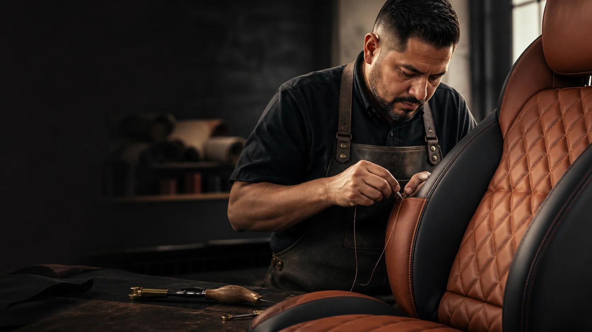
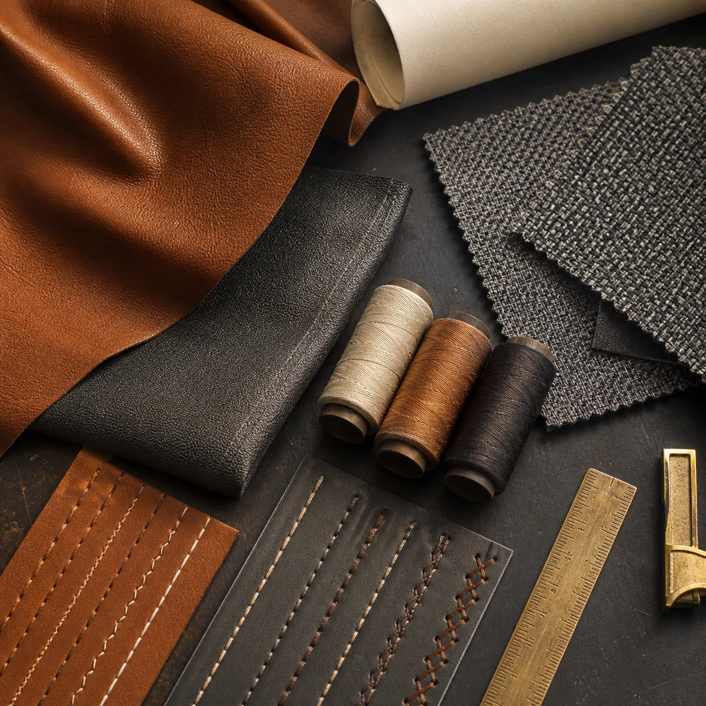
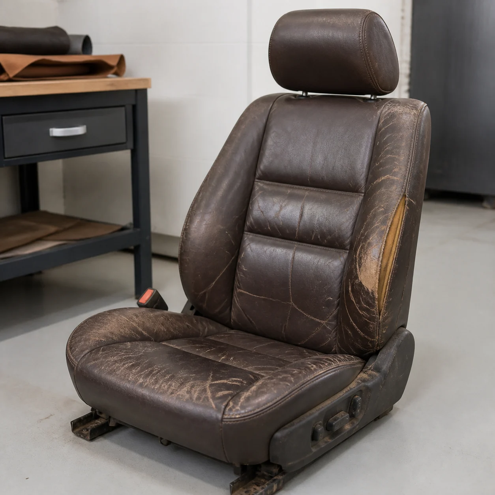
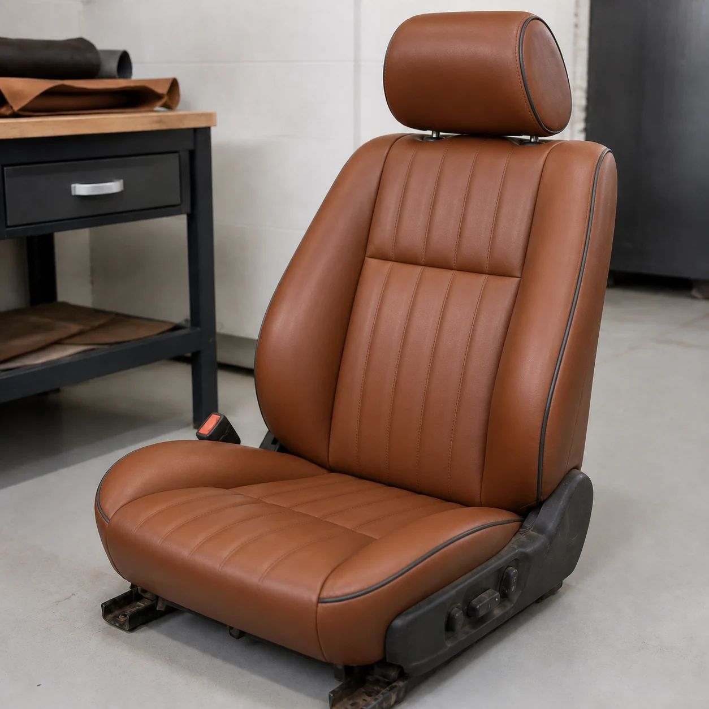
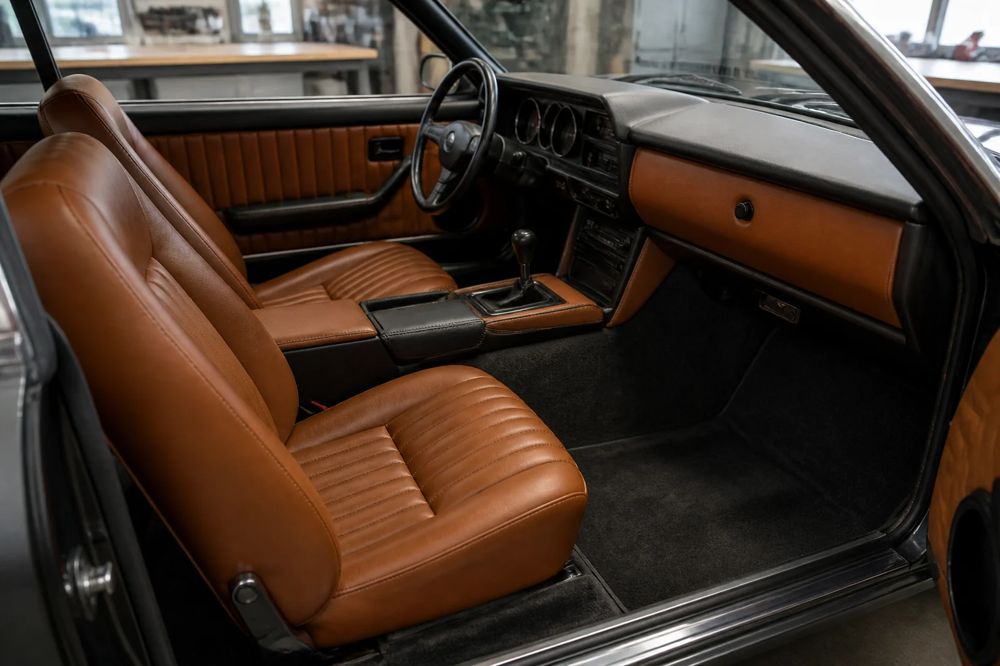

Tapicería automotriz · Houston
Renueva el interior.
Conserva el carácter.
Reparación, retapizado y acabados personalizados para los espacios donde cada viaje comienza.
El oficio
El interior de tu auto merece el mismo cuidado que su exterior.
Cada asiento cuenta una historia. Nuestro enfoque combina trabajo manual, materiales adecuados para uso automotriz y atención al detalle para devolver comodidad y carácter a cada interior.
Este texto es demostrativo y deberá adaptarse a las capacidades reales del taller.
Conoce los serviciosServicios
Del desgaste diario
al proyecto especial.
Una arquitectura clara permite al cliente identificar rápidamente el componente que necesita reparar.
- 01
Retapizado de asientos
Renovación completa en cuero, vinil o tela.
- 02
Reparación localizada
Costuras, paneles, rellenos y áreas desgastadas.
- 03
Cielos y techos interiores
Corrección de tela desprendida y acabados dañados.
- 04
Paneles y consolas
Puertas, descansabrazos y consola central.
- 05
Interiores personalizados
Color, textura, costura y detalles seleccionados contigo.

Antes y después
La diferencia está
en los detalles.
Arrastra el control para comparar una visualización de reparación. Las imágenes fueron generadas para esta demostración.



Proyecto destacado · Conceptual
Clásico en coñac
Asientos, paneles y consola en una paleta cálida y atemporal.
Proceso
Claro desde la primera foto.
Una evaluación inicial sencilla reduce las llamadas de ida y vuelta y prepara una conversación más útil.
- 01
Comparte tu vehículo
Año, marca, modelo y fotografías del área que necesita atención.
- 02
Revisamos el trabajo
Identificamos el alcance inicial y si hace falta inspección presencial.
- 03
Elige el acabado
Compara materiales, colores, texturas y opciones de costura.
- 04
Agenda el servicio
Confirmamos la cotización final, el tiempo estimado y la fecha.
Las fotografías ayudan con una evaluación inicial; el precio final puede requerir inspección del vehículo.
Materiales y acabados
El tacto también
forma parte del diseño.
La selección correcta depende del uso diario, la exposición al calor, el estilo del vehículo y el mantenimiento esperado.
Cuero coñac
Preguntas
Antes de traer
tu vehículo.
Respuestas breves para preparar la evaluación inicial.
¿Pueden cotizar solamente con fotografías?
Las imágenes permiten una evaluación inicial. El precio final puede requerir revisar personalmente el asiento, relleno o estructura.
¿Reparan solamente una sección dañada?
Depende de la condición, el material y la posibilidad de igualar color y textura. La recomendación se define después de evaluar la pieza.
¿Puedo escoger color y tipo de costura?
Sí, cuando el proyecto admite personalización. Las opciones reales deben confirmarse con el inventario de materiales del taller.
¿Cuánto tiempo toma el trabajo?
Varía según el componente, la disponibilidad del material y el alcance. El tiempo se confirma junto con la cotización final.
Cuéntanos sobre tu vehículo
Empieza con unas fotos.
Completa esta demostración para ver cómo funcionaría una solicitud. Los datos no se almacenan ni se envían.